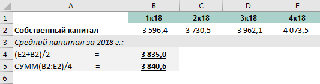
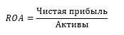

Чтобы оценить потенциальную доходность акций на время отвлечемся от рыночных котировок и сосредоточимся на фундаментальной составляющей компании.
Акционеру, как владельцу доли в бизнесе принадлежат чистые активы компании – все активы за вычетом обязательств. Именно столько будет стоить доля инвестора, если компания вдруг перестает генерировать прибыль и примет решение прекратить деятельность. Это значение можно легко найти в отчетности компании под названием собственный капитал.
Собственный капитал (equity) = активы (assets) – обязательства (liabilities)
Однако, нормально работающий бизнес приносит прибыль, то есть создает некую доходность на капитал своих владельцев. Именно поэтому рыночная стоимость компании (капитализация) может существенно отличаться от величины чистых активов. С точки зрения инвестора основную ценность представляет не рыночная стоимость активов, а та доходность, которую они могут генерировать.
Соответственно встает вопрос: как измерить эту ценность? Здесь как раз помогает ROE, который показывает, какую доходность приносит компания своим владельцам.
ROE (return on equity) = прибыль (net income)/собственный капитал (equity).
По сути, ROE – это та процентная ставка, под которую в компании работают средства акционеров. Этот показатель является ключевым для определения эффективности деятельности компании. Например, показатель ROE = 20% говорит о том, что каждый рубль, вложенный в компанию, ежегодно приносит 20 копеек прибыли.
Эта прибыль может быть получена инвестором либо непосредственно в виде дивидендов, либо реинвестирована в бизнес – направлена на развитие, закупку оборудования, снижение долга и т.д. Если реинвестирование прибыли будет эффективным, т.е. позволит сохранить ROE на прежнем уровне или выше, то инвестор получит эту прибыль в виде роста курсовой стоимости акций.
На фондовом рынке у инвестора всегда есть выбор, куда вложить свои средства, поэтому в рамках отдельной отрасли, как правило, формируется некий стандарт доходности, на которую рассчитывают инвесторы. Он отражает мнение участников рынка о том, какой ROE будет адекватен для данного класса компаний. Назовем его средней ожидаемой доходностью.
Например, пусть в отдельно взятой отрасли средняя ожидаемая доходность составляет 12%. Тогда компания «А» с показателем ROE = 10% будет мало интересна инвесторам. А вот компания «В» с ROE = 14% при прочих равных наоборот будет более привлекательной, так как дает больший уровень прибыли, чем сопоставимые аналоги.
Это будет приводить к тому, что цена на акции «В» будет расти до тех пор, пока доходность от ее покупки не станет равной средней ожидаемой. Это условие будет соблюдено при цене на акцию, равной 14%/12% = 117% балансовой стоимости. Акции компании «А», напротив, будут снижаться в цене до уровня 10%/12% = 83% балансовой стоимости.
Соотношение ROE компании и средней ожидаемой доходности для сопоставимых предприятий по сути эквивалентно коэффициенту P/BV, широко используемому в сравнительном анализе.
R – требуемая инвесторами доходность,
E – прибыль,
P – капитализация,
BV – балансовая стоимость (собственный капитал)
Читайте также: Как балансовая стоимость акций может помочь в инвестировании
Обобщим ключевые моменты:
- ROE это та доходность, на которую может рассчитывать инвестор при покупке акции по цене, близкой к балансовой стоимости (P/BV=1). Эту доходность инвестор сможет получить в виде дивидендов, либо в виде роста собственного капитала, который участники рынка заложат в курсовую стоимость акций.
- Если акция торгуется по цене, отличной от балансовой стоимости, то ее потенциальная доходность определяется формулой ROE / (P/BV) или еще проще: Eps/P, где Eps – прибыль на акцию, а P – рыночная стоимость акции.
- Изучая текущие и форвардные (прогнозные) показатели ROE и коэффициенты P/BV сопоставимых компаний, можно примерно оценить требуемую рынком доходность в отрасли и фундаментальную недооценку или переоценку отдельных бумаг.
Анализ динамики ROE
Стоит отметить, что показатель ROE для большинства компаний не является стабильным. Из года в год он меняется в зависимости от различных факторов. Для оценки перспектив акции отдельной компании стоит изучить историческую динамику ROE, которая позволит сделать предположение о справедливости текущей оценки и построить прогноз по форвардным значениям на планируемый период инвестиций.
Для анализа факторов, влияющих на ROE, можно разложить показатель по трехфакторной модели Дюпона.
ROS (return on sales) – рентабельность продаж по чистой прибыли, указывает на операционную эффективность компании (также можно встретить термин Net income margin). Рост показателя может говорить, например, о сокращении себестоимости, уменьшении влияния фиксированных издержек за счет эффекта масштабирования, или позитивной динамике цен на выпускаемый продукт или сырье.
TAT (total asset turnover) – оборачиваемость активов, характеризует способность активов компании генерировать выручку. Высокие значения говорят о сбалансированной длительности финансового цикла и высокой интенсивности использования активов.
TL (total leverage) – финансовый рычаг, указывает на эффективность использования заемных средств. Показывает соотношение всех активов компании и активов, финансируемых из собственных средств.
Такая декомпозиция ROE дает возможность более детально изучить факторы, влияющие на показатель и оценить сильные и слабые стороны рассматриваемой компании. Также можно использовать пятифакторную модель, где дополнительно есть возможность оценить влияние особенностей налогообложения и расходов на проценты по долгу. В ней параметр ROS раскладывается на три составляющие:
Особенности расчета ROE
Формула расчета показателя достаточно проста, но на практике инвестор сталкивается с рядом вопросов, которые стоит осветить. Собственный капитал в знаменателе может быть взят в следующих вариантах:
- для расчета используется размер капитала на начало периода;
- для расчета используется среднее значение капитала за период. Обычно берут среднее арифметическое начального и конечного значения, реже используют среднее значение на основании поквартального баланса. Как правило, существенного различия не наблюдается.

Прибыль компании можно взять за расчетный период либо использовать прогнозное значение, если речь идет о форвардном показателе. Если необходимо посчитать ROE за период, отличный от года, то можно взять прибыль за последние 12 месяцев (LTM, last twelve month) и поделить на средний размер капитала за этот же период.
Аналоги ROE
При расчете показателя вы можете столкнуться с тем, что компания имеет отрицательное значение прибыли или собственного капитала. Расчет ROE в таких случаях даст некорректные результаты, поэтому имеет смысл использовать сходные по смыслу коэффициенты рентабельности активов (ROA, return on assets) и рентабельности задействованного капитала (ROCE, return on capital employed).

Расчет рентабельности активов ROA имеет смысл при положительной прибыли и показывает, сколько компания зарабатывает на каждый рубль, вложенный в активы акционерами и кредиторами. Он не так репрезентативен, как ROE, но тоже позволяет сделать ряд выводов об эффективности предприятия, а также сравнить его с конкурентами из отрасли. По сути, ROA – это тот же ROE, но без учета финансового рычага (вспоминаем модель Дюпона).
При расчете в знаменателе может быть значение на начало периода или средняя величина активов, в числителе – чистая прибыль за рассматриваемый период.
Показатель рентабельности задействованного капитала ROCE часто выступает одним из ориентиров целесообразности привлечения дополнительных заемных средств. Чем выше показатель, тем более высокую стоимость долга может позволить себе компания. Он может быть использован, как при отрицательном собственном капитале, так и при отрицательной чистой прибыли.
В числителе показатель содержит EBIT – прибыль до вычета налогов и процентов по кредитам. Для компаний, у которых доходы и расходы от неоперационной деятельности незначительны, EBIT примерно эквивалентен операционной прибыли.
Расчет показателей на примере ПАО «Детский мир», имеющей отрицательный собственный капитал.
Как видно из таблицы, расчет ROE для отрицательного капитала дает нерепрезентативные данные. То же можно сказать про расчет показателя при очень малых размерах собственного капитала. В данном случае аналоги ROA и ROCE дадут более наглядную картину изменения эффективности компании.
При этом, в случае с «Детским миром» важно учесть особенности учетной политики. С 2018 г. компания применила стандарт МСФО (IFRS) 16 к отображению аренды, что сказалось на ряде строк в отчетности. Расчет коэффициентов (отмечен красным) по новым стандартам покажет сильное отклонение в негативную сторону, в то время как при расчете по учетной политике, сопоставимой с показателями за предыдущие годы, можно наблюдать сохранение позитивной тенденции. Поэтому при использовании ROE, ROA, ROCE и любых других финансовых коэффициентов важно учитывать особенности представления информации в отчетности, чтобы корректно оценить компанию.